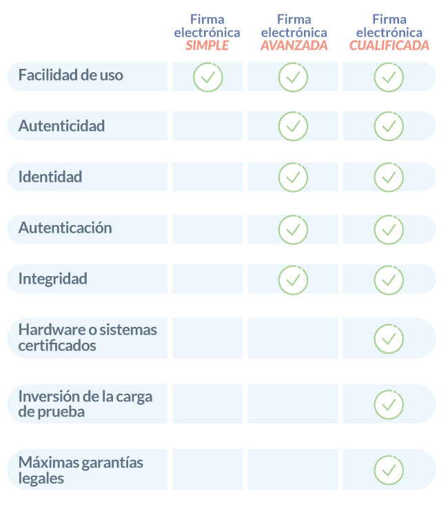

La firma electrónica es un conjunto de datos en formato electrónico que el firmante utiliza para autenticar su identidad y aprobar documentos. A diferencia de una firma manuscrita, la firma electrónica está vinculada a datos digitales asociados a un documento electrónico.
Según el Reglamento eIDAS, existen tres tipos de firma electrónica, cada uno con diferentes niveles de seguridad y certeza jurídica:
-Firma electrónica simple.
- Es la más básica y proporciona menos seguridad al usuario.
- No permite la vinculación unívoca del titular.
- Se utiliza para confirmar la autoría de un documento.
-Firma electrónica avanzada.
- Ofrece un nivel intermedio de seguridad.
- Vincula al firmante de manera única, permitiendo su identificación.
- Aunque no es equiparable a una firma manuscrita, es útil en trámites legales.
-Firma electrónica cualificada.
- Brinda el nivel de seguridad más alto y máximas garantías jurídicas.
- Evita situaciones de vulnerabilidad y se sustenta como prueba plena.
- Es la única que se considera equivalente a una firma manuscrita.
